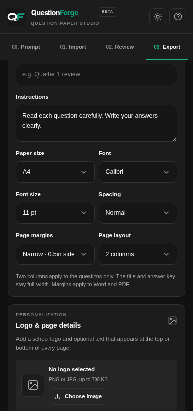

Install QuestionForge in Chrome
QuestionForge v0.8.4 is a production-packaged developer preview. It is not represented here as a published Chrome Web Store extension. You can install it locally using Chrome's Load unpacked feature.
Installing the Chrome extension requires a desktop computer.
- Download the extension ZIP above and extract it to a folder.
- Open
chrome://extensionsin Chrome. - Enable Developer mode.
- Click Load unpacked and select the extracted
questionforge-extensionfolder containingmanifest.json. - Pin QuestionForge in the Chrome toolbar and open its side panel.
Only load unpacked extensions from sources you trust. These installation steps are for testing while a Web Store listing is not available.
Build an exam from teaching materials
Use this guided workflow when you have a lesson plan, Budget of Work (BOW), Table of Specifications (TOS), or curriculum guide.
- Open 00 Prompt and select the source type.
- Choose Import files, Paste text, or Attach in ChatGPT.
- For local import, verify the structured content against the original document. Approve only information you have checked.
- Confirm detected grade, subject, quarter, and school where available. Set question counts and cognitive levels.
- Copy the coverage planning prompt into ChatGPT. If the content is long, copy and confirm numbered source packets in order.
- Review the proposed coverage plan. Only when satisfied, check approval and copy the exam generation prompt.
- Request structured JSON, copy it into QuestionForge, and validate the imported questions.
QuestionForge creates prompts; ChatGPT generates the questions. QuestionForge itself has no AI API, and you decide what source text to paste into ChatGPT.
What if extraction fails?
Some PDFs are scanned, encrypted, or have complex reading order. The current extension does not include automatic OCR. When PDF extraction is uncertain, use a DOCX/XLSX source where available or paste text you have manually verified.
Large documents
QuestionForge can break reviewed content into numbered packets, but copying every packet doesn't guarantee ChatGPT will retain it all. For very large sources, select a smaller teacher-approved subset and verify the resulting coverage plan.
Review questions before export
Go to 01 Import and paste the generated assessment or import a supported structured JSON file. The JSON format is recommended because it keeps question types and answers together.
- Parse the questions.
- Open 02 Review to check the total, type distribution, and warnings.
- Edit wording, options, correct answers, question type, points, or order.
- Use the formatting-repair prompt if ChatGPT returned malformed or inconsistent JSON, then re-import and validate again.



Generated questions and answer keys can contain mistakes. A teacher or reviewer should verify content accuracy and curriculum alignment before distribution.
Format the finished assessment
In 03 Export you can configure a document title, school, subject, instructions, and the paper layout.
- Modes: student paper or teacher version with answer key.
- Paper: A4, Letter, or Legal.
- Typography: font, size, and line spacing.
- Layout: normal, narrow, moderate, or wide margins, and one or two question columns.
- Branding: institution logo (under one inch), custom page header and footer, and page numbering.
Export to Word
Choose Download Word to generate an editable .docx file. Check its page breaks before printing.
Save as PDF
Choose Print / save as PDF, then select Chrome's Save as PDF destination. For QuestionForge's margins, use Chrome's default print margins and disable Chrome's additional headers and footers to avoid duplicates.
The title and answer key remain full-width in two-column mode. Long essay responses may still be easier to read in one column.
Keep control of local data
- Drafts: optional Chrome local storage, not encrypted by QuestionForge.
- Retention: choose 7, 30, or 90 days, or no automatic expiration; default is 30 inactive days, checked when the extension next opens.
- No-save mode: turn draft saving off for sensitive examination materials.
- Clear data: delete saved QuestionForge extension data from Privacy & security.
- Sharing: only copy teaching content to an AI service after reviewing it and removing unnecessary personal information.
For more detail, read the full privacy policy.
What the extension does not do
- It does not generate AI questions by itself.
- It does not guarantee perfect extraction from scans, complex PDFs, or mathematical layouts.
- It does not guarantee question correctness; users must review the assessment.
- It does not encrypt locally saved drafts.
- It cannot guarantee that external AI services retain all pasted source packets.
- It does not process GCash payments or confirm donations.
Need help? Contact support with the browser version, extension version, and a description of the issue—without including private student records.